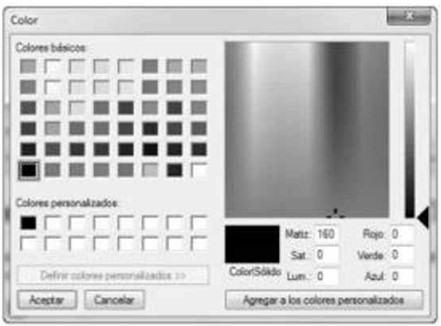
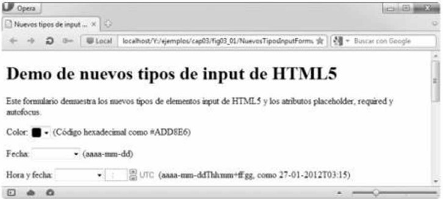
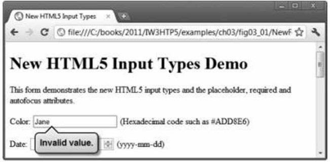
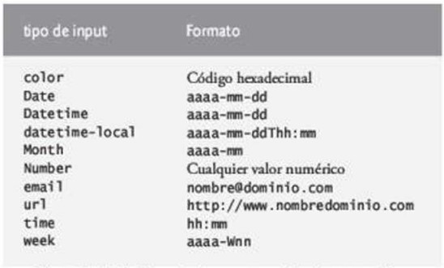

El tipo input color (figura 3.1, lineas 20 y 21) permite al usuario introducir un color. Al momento de escribir este libro, algunos navegadores despliegan el tipo input color como un campo de texto en donde el usuario puede introducir un código hexadecimal o el nombre de un color. Hay dos navegadores, Chrome y Opera, que muestran un selector de color similar al cuadro de diálogo de colores de Microsoft Windows, que se muestra en la figura 3.2. En el futuro, cuando haga clic en un elemento input color, es muy probable que el resto de los navegadores muestren un selector de color también.

Figura 3.2 | Un diálogo para seleccionar colores.
El atributo autofocus
El atributo autofocus (figura 3.1, línea 20) (un atributo opcional que puede usarse sólo en un elemento
input en un formulario) otorga de manera automática el enfoque al elemento input, lo que permite al usuario
empezar a escribir en ese elemento de inmediato. La figura 3.3 muestra el uso del elemento autofocus en el
elemento color (el primer elemento input en nuestro formulario), como se despliega en Opera. No necesita
incluir autofocus en sus formularios.

Figura 3.3 | Autofocus en el elemento input color cuando se usa el navegador Opera.
Validación
Tradicionalmente ha sido difícil validar la entrada del usuario, como asegurar que se
introduzca una dirección de correo electrónico, URL, fecha u hora en el formato adecuado.
Los nuevos tipos input de HTML5 cuentan con validación automática del lado del cliente,
con lo que se elimina la necesidad de agregar código complicado de JavaScript a nuestras páginas
Web para validar la entrada del usuario; así se reduce la cantidad de datos inválidos que se
envían y, en consecuencia, disminuye el tráfico de Internet entre el servidor y el cliente
que se usa para corregir las entradas inválidas. De todas formas el servidor debe validar toda
la entrada del usuario.
Cuando un usuario introduce datos en un formulario y luego lo envía (en este ejemplo, al hacer clic en el botón Enviar, el navegador verifica de inmediato los elementos de validación automática para asegurar que los datos sean correctos. Por ejemplo, si un usuario introduce un valor de color hexadecimal incorrecto al usar un navegador que despliegue los elementos color como un campo de texto (por ejemplo. Internet Explorer), aparecerá una anotación para señalar ese elemento e indicar que se introdujo un valor incorrecto (figura 3.4). La figura 3.5 lista cada uno de los nuevos tipos Input de HTML5 y muestra ejemplos de los formatos correctos requeridos para que cada tipo de datos sea válido.

Figura 3.4 | Validación de un elemento input color. (Actualmente ya no existe esta funcionalidad en Chrome).

Figura 3.5 | Tipos de input con validación automática
Si desea pasar por alto la validación, puede agregar el atributo formnovalidate al tipo input submit en la línea 101:
<input type="submit" value="Enviar" formnovalidate />